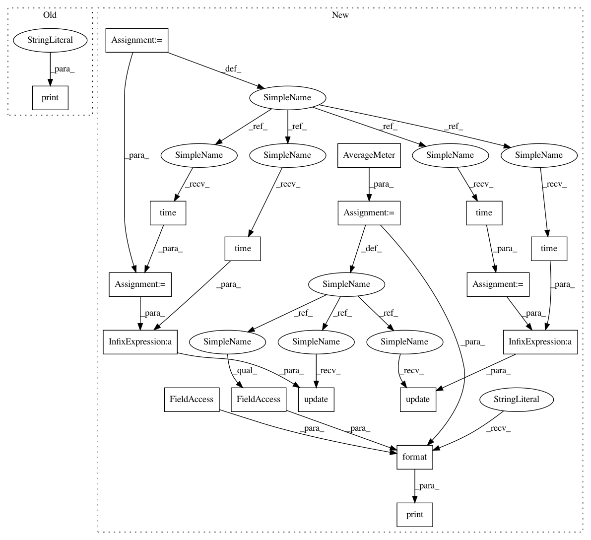

5e60effffea9f4e2183d4191279706e8faf49184,train_img_model_xent_htri.py,,test,#Any#Any#Any#Any#Any#,240
Before Change
print("Extracted features for gallery set, obtained {}-by-{} matrix".format(gf.size(0), gf.size(1)))
print("Computing distance matrix")
m, n = qf.size(0), gf.size(0)
distmat = torch.pow(qf, 2).sum(dim=1, keepdim=True).expand(m, n) + \
torch.pow(gf, 2).sum(dim=1, keepdim=True).expand(n, m).t()
After Change
def test(model, queryloader, galleryloader, use_gpu, ranks=[1, 5, 10, 20]):
batch_time = AverageMeter()
model.eval()
with torch.no_grad():
qf, q_pids, q_camids = [], [], []
for batch_idx, (imgs, pids, camids) in enumerate(queryloader):
if use_gpu:
imgs = imgs.cuda()
end = time.time()
features = model(imgs)
batch_time.update(time.time() - end)
features = features.data.cpu()
qf.append(features)
q_pids.extend(pids)
q_camids.extend(camids)
qf = torch.cat(qf, 0)
q_pids = np.asarray(q_pids)
q_camids = np.asarray(q_camids)
print("Extracted features for query set, obtained {}-by-{} matrix".format(qf.size(0), qf.size(1)))
gf, g_pids, g_camids = [], [], []
for batch_idx, (imgs, pids, camids) in enumerate(galleryloader):
if use_gpu:
imgs = imgs.cuda()
end = time.time()
features = model(imgs)
batch_time.update(time.time() - end)
features = features.data.cpu()
gf.append(features)
g_pids.extend(pids)
g_camids.extend(camids)
gf = torch.cat(gf, 0)
g_pids = np.asarray(g_pids)
g_camids = np.asarray(g_camids)
print("Extracted features for gallery set, obtained {}-by-{} matrix".format(gf.size(0), gf.size(1)))
print("==> BatchTime(s)/BatchSize(img): {:.3f}/{}".format(batch_time.avg, args.test_batch))
m, n = qf.size(0), gf.size(0)
distmat = torch.pow(qf, 2).sum(dim=1, keepdim=True).expand(m, n) + \
torch.pow(gf, 2).sum(dim=1, keepdim=True).expand(n, m).t()
In pattern: SUPERPATTERN
Frequency: 4
Non-data size: 18
Instances
Project Name: KaiyangZhou/deep-person-reid
Commit Name: 5e60effffea9f4e2183d4191279706e8faf49184
Time: 2018-05-22
Author: k.zhou@qmul.ac.uk
File Name: train_img_model_xent_htri.py
Class Name:
Method Name: test
Project Name: KaiyangZhou/deep-person-reid
Commit Name: 5e60effffea9f4e2183d4191279706e8faf49184
Time: 2018-05-22
Author: k.zhou@qmul.ac.uk
File Name: train_img_model_xent_htri.py
Class Name:
Method Name: test
Project Name: KaiyangZhou/deep-person-reid
Commit Name: 5e60effffea9f4e2183d4191279706e8faf49184
Time: 2018-05-22
Author: k.zhou@qmul.ac.uk
File Name: train_img_model_ring.py
Class Name:
Method Name: test
Project Name: KaiyangZhou/deep-person-reid
Commit Name: 5e60effffea9f4e2183d4191279706e8faf49184
Time: 2018-05-22
Author: k.zhou@qmul.ac.uk
File Name: train_img_model_cent.py
Class Name:
Method Name: test
Project Name: KaiyangZhou/deep-person-reid
Commit Name: 5e60effffea9f4e2183d4191279706e8faf49184
Time: 2018-05-22
Author: k.zhou@qmul.ac.uk
File Name: train_img_model_xent.py
Class Name:
Method Name: test